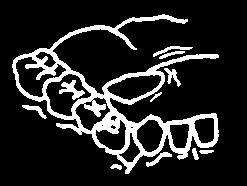


IF THE PERSON
AND YOU FIND OUT
HE/SHE MAY SEE
HAS
THAT
HAVE
PAGE
He had a toothache recently.
a tooth
The bad tooth hurts when abscess you tap it.
A
SWOLLEN FACE
She is young, about 18 years old, and has trouble opening a new tooth her mouth.
growing in
He was hit on the face or jaw.
The bone hurts when you touch it. The teeth do not fit a broken bone together properly.
The swelling is under or behind the jaw. It gets worse an infection when he is hungry and smells inside the spit food.
gland
The swelling has been there for a long time. It does not seem to a tumor get better.
Food and tartar are attached infection to the tooth. The gums inside the root around it are loose and fibers—from swollen.
gum disease
There was pain in the tooth before, but it does not hurt infection in the so much anymore. It has a bone—from and cavity and there may be a an old tooth sore on the gums near it.
abscess
A
LOOSE TOOTH
The tooth was hit a root broken some time ago.
under the gum
When the loose tooth moves, the bone around it a broken bone and the tooth beside it also around the to move.
tooth’s roots
OR infection inside the bone from and
Vincent’s
Infection
When you ask the person to a tooth is out slowly close his teeth, one of position and tooth hits another, before the biting too hard other teeth come together.
aganist another


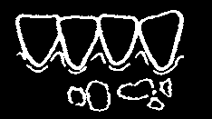
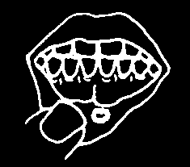
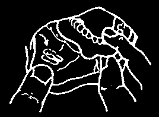

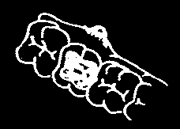

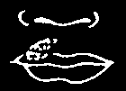
IF THE PERSON
AND YOU FIND OUT
HE/SHE
SEE
HAS
THAT
MAY HAVE
PAGE
The gums are red and gum disease swollen. They bleed when the starting teeth are cleaned.
Between two teeth the gums something
A SORE MOUTH
are sore and swollen, like a caught under from small tumor.
the gum
INFECTED GUMS
The gums between the teeth have died and are no longer
Vincent’s pointed. Pus and blood around
Infection (a the teeth make the mouth more serous smell bad.
gum infection)
The gums are bright red and fever blisters sore, but between the teeth on the gums— they are still pointed.
from Herpes
Virus
A sore on the inside of the cheek, lips, or under the tongue, is yellow with the skin around it bright red.
a canker sore
Food touching it makes the sore hurt more.
a sharp place
A sore spot around or under on a denture, or a denture hurts when you or an old
A SORE MOUTH
touch it.
denture that needs to be from a refitted
SMALL SORE
in another
A kind of white cloth seems place to be stuck to the top of the mouth or tongue. It may thrush stop a baby from sucking.
The sore is near the root of a bad tooth.
gum bubble and
The corners of the mouth are dry. The lips crack and malnutrition are sore.
Small painful blisters on the fever blisters— lips soon break and form dry from Herpes scabs.
Virus
A SORE THAT DOES NOT HEAL PROPERLY MAY BE CANCER (See page 125).
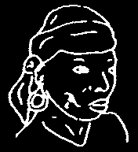

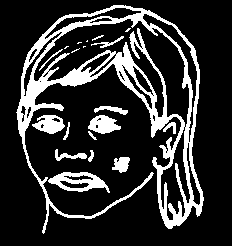

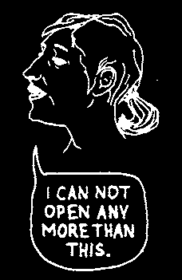
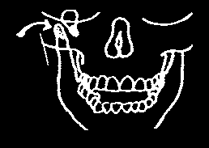

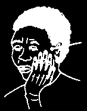
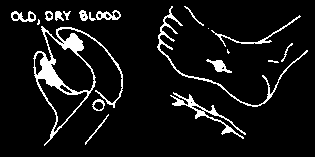

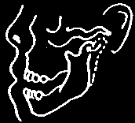

IF THE PERSON
AND YOU FIND OUT
HE/SHE MAY
SEE
HAS
THAT
HAVE
PAGE
Inside his mouth, he has a abscessed tooth tooth abscess or a broken draining pus to tooth near the sore.
the outside of the face
A SORE
ON THE FACE
A dark sore is eating through a condition the cheek. Her gums are called Noma— badly infected. A bad smell is starting from coming from the dying skin on
Vincent’s the face, and from inside the
Infection of the mouth.
gums
A 1-month-old sore on the lips is not healing with medicine.
cancer
He is young, between
16–24 years, with some a new tooth swelling behind his jaw.
growing in a broken jaw—
TROUBLE
He recently had an accident.
probably in
OPENING THE
front of the ear
MOUTH
He had a toothache before in a back tooth with some an abscess in a swelling.
back tooth
When she tries to open her mouth, there is clicking pain in the sound from in front of her joint—where ear. It also hurts in that place the jawbone whenever she tries to open joins the head her mouth or chew food.
Swallowing is difficult and the jaw grows stiff. Germs have gone into the body tetanus from dirty instruments or an infected wound.
TROUBLE
After opening wide to eat
CLOSING THE
or yawn, his mouth became a dislocated
MOUTH
stuck there. He was many jaw missing back teeth.
He had an accident and now something is stopping the a broken jaw teeth from coming together.
Treating Some
CHAPTER 7
Common Problems
You must make a good diagnosis to treat a problem so it goes away and does not return. Why treat a sore on the face by cleaning it when the sore is from pus draining from a tooth with an abscess? You need to know the cause of the sore to give the best kind of treatment.
After you make the diagnosis, you must decide whether you or a more experienced dental worker should provide the treatment.
Know your limits. Do only what you know how to do.
In the following pages, we describe the kinds of problems you as a health worker may see, and we also give the treatment for each problem.
Before you touch the inside of anyone’s mouth, learn how to keep clean. The next 6 pages explain how you can prevent infections by washing your hands, wearing gloves, and sterilizing your instruments.
Germs in the mouth
The mouth is a natural home for germs. They usually do not cause problems because the body is used to them. In fact, many germs are helpful. For example, when we eat, some germs break down chewed food into parts small enough for the body to use.
There are problems when the number of these ordinary germs increases greatly, or when strange, harmful germs come into a healthy body from outside. Fever and swelling follow. It is an infection.
When we regularly clean the mouth, the number of germs stays normal.
You can teach others to clean teeth and gums, but cleaning is each person’s responsibility.
However, dental workers have one serious responsibility. You must not spread germs from a sick person to a healthy person. You must do everything you can to make sure your instruments are clean. An instrument with blood on it can spread hepatitis (a serious liver disease) or HIV, which causes AIDS.

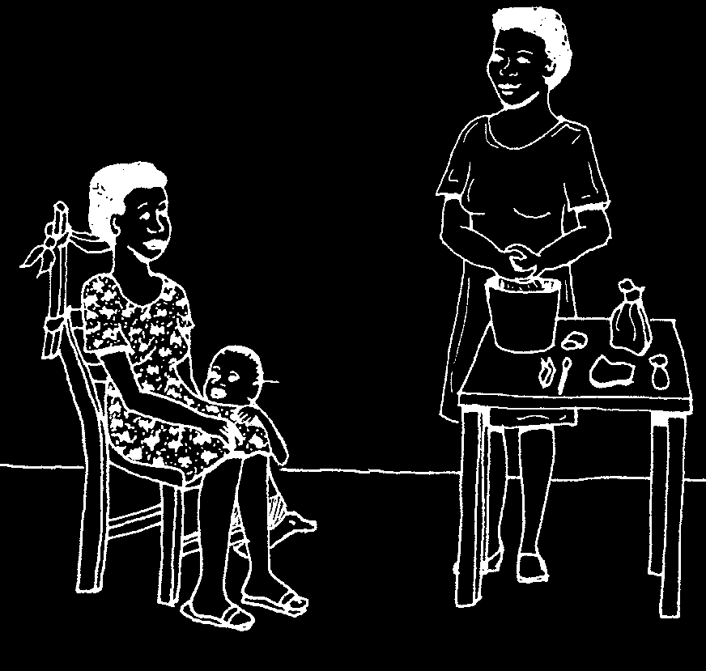
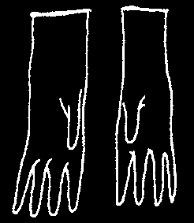
THE FIRST RULE FOR TREATMENT: STAY CLEAN!
No matter what problem you are treating, be sure that your workplace, your instruments, and you are always clean. For example, prevent infection by always washing your hands before you examine or treat someone.
Wash your hands in front of the person, in the same room. You will show that you are a careful and caring health worker. Also, you will demonstrate just how important cleanliness really is.
Wear gloves
Latex or plastic gloves protect the people you touch from germs that may be stuck under your fingernails or on your skin, even after you wash your hands. They also protect you from getting infections. Wear clean gloves whenever you touch someone’s mouth or any blood.
If you are filling or removing a tooth, or if you are touching any instruments that have been sterilized, you must wear sterile gloves.
If you do not have gloves, use plastic bags that have been washed in disinfectant soap instead.
Bags are harder to use than gloves, but they are better than nothing.
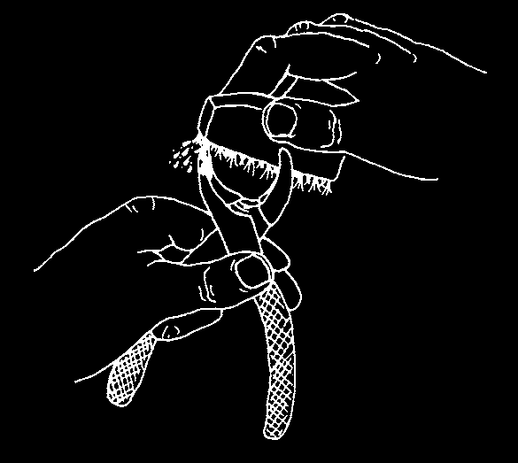

Germs hide inside bits of old food, cement, or blood on an instrument. There they can continue to live, even in boiling water.
This is why you must be sure to scrub the working end of each instrument carefully with soap and water. Rinse, and then look carefully to see that it is clean and shiny.
remember that 'clean looking’ is not necessarily 'clean’. Truly 'clean’ means free of germs. Unless you sterilize, that instrument may still have germs, the kind that cause infection in the next person that it touches.
Sterilizing means killing germs. The best way to sterilize is with heat. High heat kills almost all harmful germs—especially those that cause hepatitis, tetanus, and mouth infections. Wet heat (steam) is always more effective than dry heat from an oven.
Here is a simple rule to use in deciding when to sterilize:
Boil or sterilize with steam any instrument that has touched blood.
That means always sterilize all syringes, needles, and instruments you use when scaling teeth (Chapter 8)
or when taking out a tooth
Be safe: When in doubt, sterilize.
(Chapter 11).
Instruments left in boiling water need 30 minutes to become sterile. A pot with a cover to trap the steam can act faster. The inside becomes hotter and
20 minutes is enough. But remember that water can rust metal instruments.
To prevent rust:
• Add 5 spoonfuls (20 ml) of oil to every liter of water you boil.
• Then lay the hot instruments on a dry, clean (sterile, if possible) cloth, so the water can evaporate.
Never put an instrument away while it is wet.
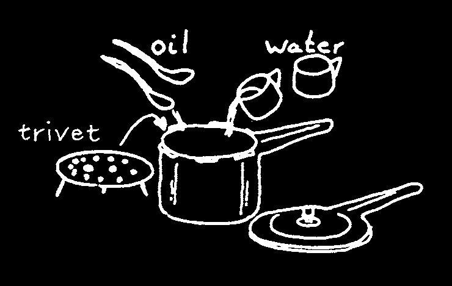
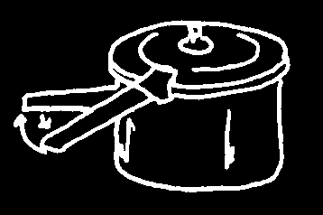